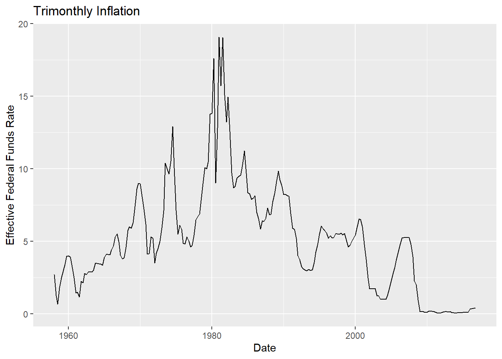
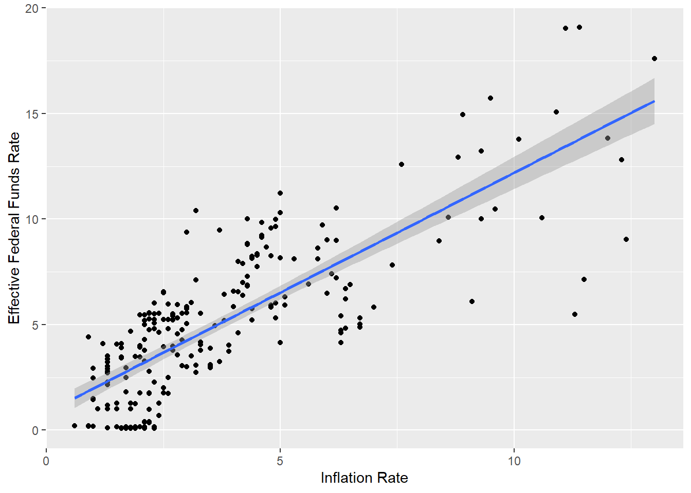

library(tidyverse)
library(ggplot2)
knitr::opts_chunk$set(echo = TRUE, warning=FALSE, message=FALSE)Challenge 6 Will Munson
challenge_6
hotel_bookings
air_bnb
fed_rate
debt
usa_hh
abc_poll
Visualizing Time and Relationships
Challenge Overview
Today’s challenge is to:
- read in a data set, and describe the data set using both words and any supporting information (e.g., tables, etc)
- tidy data (as needed, including sanity checks)
- mutate variables as needed (including sanity checks)
- create at least one graph including time (evolution)
- try to make them “publication” ready (optional)
- Explain why you choose the specific graph type
- Create at least one graph depicting part-whole or flow relationships
- try to make them “publication” ready (optional)
- Explain why you choose the specific graph type
R Graph Gallery is a good starting point for thinking about what information is conveyed in standard graph types, and includes example R code.
(be sure to only include the category tags for the data you use!)
Read in data
Read in one (or more) of the following datasets, using the correct R package and command.
- debt ⭐
- fed_rate ⭐⭐
- abc_poll ⭐⭐⭐
- usa_hh ⭐⭐⭐
- hotel_bookings ⭐⭐⭐⭐
- air_bnb ⭐⭐⭐⭐⭐
fed_rate <- read_csv("_data/fedfundsrate.csv", show_col_types = FALSE)Briefly describe the data
So, the data appears to be about the changes in federal funding, and how that impacts the overall GDP, unemployment, and inflation. However, much of the data is missing, so we’ll need to remove some rows and maybe even a few columns in order to continue working with this.
Tidy Data (as needed)
Is your data already tidy, or is there work to be done? Be sure to anticipate your end result to provide a sanity check, and document your work here.
fed_rate %>%
select(-contains("Target")) %>%
na.omit() %>%
mutate(full_date = paste(Year,Month,Day,sep="-")) %>%
mutate(full_date = as.Date(full_date))# A tibble: 236 × 8
Year Month Day Effective Federal Fund…¹ Real …² Unemp…³ Infla…⁴ full_date
<dbl> <dbl> <dbl> <dbl> <dbl> <dbl> <dbl> <date>
1 1958 1 1 2.72 -10 5.8 3.2 1958-01-01
2 1958 4 1 1.26 2.6 7.4 2.4 1958-04-01
3 1958 7 1 0.68 9.6 7.5 2.4 1958-07-01
4 1958 10 1 1.8 9.7 6.7 1.7 1958-10-01
5 1959 1 1 2.48 7.7 6 1.7 1959-01-01
6 1959 4 1 2.96 10.1 5.2 1.7 1959-04-01
7 1959 7 1 3.47 -0.8 5.1 2 1959-07-01
8 1959 10 1 3.98 1.6 5.7 2.7 1959-10-01
9 1960 1 1 3.99 9.2 5.2 2 1960-01-01
10 1960 4 1 3.92 -1.5 5.2 2 1960-04-01
# … with 226 more rows, and abbreviated variable names
# ¹`Effective Federal Funds Rate`, ²`Real GDP (Percent Change)`,
# ³`Unemployment Rate`, ⁴`Inflation Rate`
# ℹ Use `print(n = ...)` to see more rowsfed_rate2 <- fed_rate %>%
select(-contains("Target")) %>%
na.omit() %>%
mutate(full_date = paste(Year,Month,Day,sep="-")) %>%
mutate(full_date = as.Date(full_date))Are there any variables that require mutation to be usable in your analysis stream? For example, do you need to calculate new values in order to graph them? Can string values be represented numerically? Do you need to turn any variables into factors and reorder for ease of graphics and visualization?
Document your work here.
I just did that… Oops.
Time Dependent Visualization
ggplot(fed_rate2, aes(x = full_date, y = `Effective Federal Funds Rate`)) +
geom_line() +
labs(title = "Trimonthly Inflation",
x = "Date",
y = "Effective Federal Funds Rate")
When looking at the time series graph for the Federal Funds rate, I was surprised by how much federal funds just dropped to zero after around 2008. This is probably easier to explain, since right around that time, the US went through the Great Recession. It’s even stranger how federal funds didn’t seem to recover much since then.
## Visualizing Part-Whole Relationships
Now, let’s take a look at how inflation and funds rates correlate with one another.
ggplot(fed_rate2, aes(x = `Inflation Rate`, y = `Effective Federal Funds Rate`)) +
geom_point() + geom_smooth(method = lm)
As we can see, there’s a strong correlation between inflation and funding. During a recession, it appears that most financial operations seem to shut down in response, including inflation and funding. This shows that whenever we have a recession, inflation is low because companies and financial firms need to catch up with the rising costs. However, the government might also have financial issues, and might be forced to make financial cuts in order to bring the country out of financial ruin. We nearly went into default during the Great Recession, and in order to avoid this situation, the government was forced to cut funding for numerous programs, such as the EPA, and even a few towns and major cities that filed for bankruptcy had to cut pensions in order to pull themselves out.